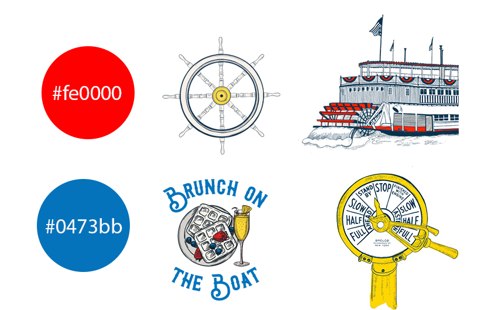

This redesign was created as a brochure project. I used colors that were cohesive with the colors on The Belle's website as well as imagery that showcases the beauty of The Belle. The purpose of this piece is to encourage people to visit the Belle of Louisville by drawing them in with a brochure that is enticing and highlights the key events that are taking place.

For this redsign project, I used elements for The Belle of Louisville that the client already had. I used their line drawings and sketches as main elements to achieve the look I was going for in this piece. However, I tried to balance it out with some beautiful real imagery that they had to really the beauty of The Belle and to encourage people to visit and take a tour. For the color palette, I noticed that reds and blues kept showing up and thought they brought a nice touch of color to the brochure and kept in line with their previous imagery.